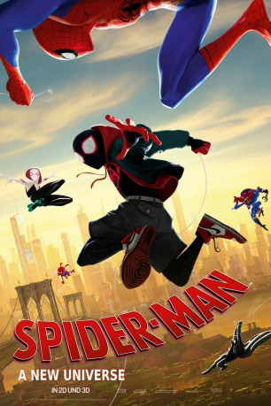

Alternativ: Spider-Man: Into the Spider-Verse (Englischer Titel)
Auszeichnungen: 1 Oscars gewonnen 1 GoldenGlobes gewonnen 1 BAFTA-Awards gewonnen
 
 IMDB-Wertung: 8.5 / 10
IMDB-Wertung: 8.5 / 10  IMDB-TOP-Platzierung: 56
IMDB-TOP-Platzierung: 56  Metascore:
Metascore: 
Miles Morales wurde von einer genetisch veränderten Spinne gebissen. Das macht ihn schnell zum neuen Spider-Man mit den bekannten Fähigkeiten. Aber Miles ist ein Teenager ohne Ahnung von der verantwortungsvollen Nutzung seiner eigenen Kräfte. Doch Hilfe naht, denn durch eine scheinbar zufällig auftretende Verkettung mehrerer Paralleluniversen trifft Miles auf Spider-Man aka Peter Parker und dieser unterweist ihn in den neuen Superkräften und überträgt ihm Verantwortung. Während beide einen Reifeprozess durchmachen, der eine als Schüler, der andere als Lehrer, treffen immer mehr Superhelden mit ähnlichen Kräften ein - ihre bösen Gegenspieler aber auch ...
Jahr: 2018
Dauer: 116 Minuten
FSK: 6
Land: USA Studio: Columbia PicturesTonspuren: DTS - ,
Untertitel:
Auflösung: 1080p (1920x1080) Größe: 10342 MB
Genre: Action, Sci-Fi, Abenteuer, Animation/Trick, Familie
Regisseur: Bob Persichetti, Peter Ramsey, Rodney Rothman
Drehbuch: Phil Lord, Rodney Rothman, Phil Lord
Soundtrack: Daniel Pemberton
Darsteller:
Datei: X:\Comic-Filme\Spider-Man\Spider-Man A New Universe (2018, FSK6, 1920x1080) 3D.mkv seit 24.04.2019
Festplatte: Comicverfilmungen+MusikCD
 Es gibt insgesamt 14 Filme in der Gruppe 'Comic-Filme\Spider-Man'
Es gibt insgesamt 14 Filme in der Gruppe 'Comic-Filme\Spider-Man'